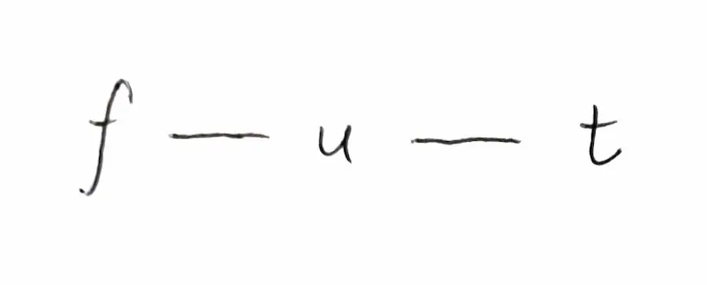
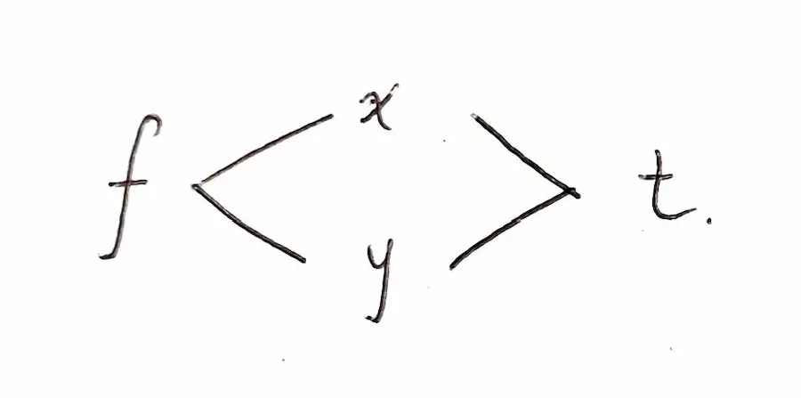
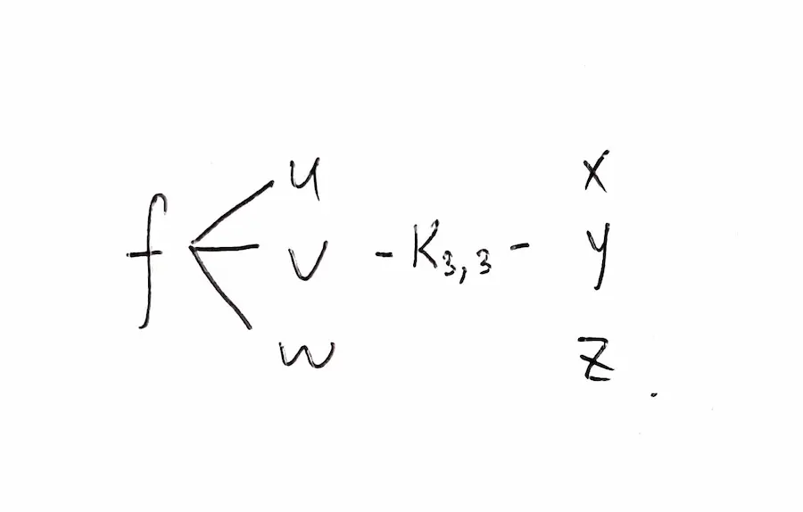
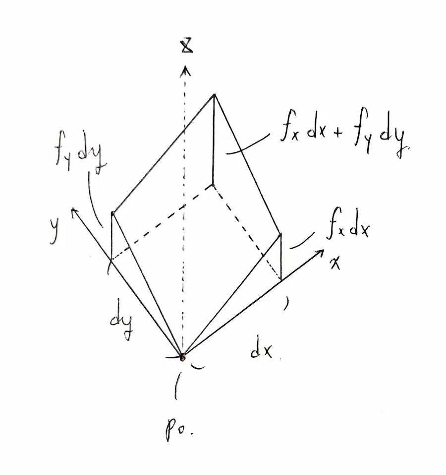
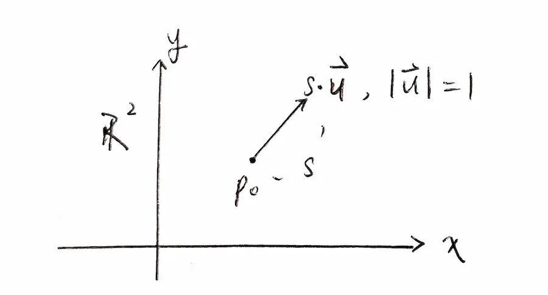

如何理解梯度與其性質
Last updated on February 5, 2023
Contents
前言
筆者學梯度時實質是經歷了一場苦痛，前前後後從高中看到前幾個月終於看懂了 \^~^/。
所以在這邊紀錄一下筆者自己的理解過程。
正文
在之前學習的過程中，總是看到以下三個性質反覆出現：
- 梯度算子將一個純量場映到一個向量場
- 梯度向量指向的方向即為原本純量場增長最快的方向
- 梯度向量會與曲線/面垂直
第一個可以理解，但從第二個性質開始就完全不知道是怎麼推導出來的，苦戰了許久。
在終於弄懂過程的現在，筆者終於可以寫下自己完整的理解過程。
知識點理解
劇透一下，第二性質是由一條公式加以推導而來。在理解這條公式之前，要先介紹三個環環相扣的知識點：
- 多元函數的鏈鎖律
- 全微分
- 方向導數
多元函數的鏈鎖律
我們在大一下之前碰到的大多都是單元函數的鏈鎖律：
$$ \frac{df(u)}{dt} = \frac{df(u)}{du}\cdot\frac{du}{dt} \tag{1} $$
而我們也可將鏈鎖律推廣到更一般的狀況下，也就是針對多元函數的狀況。但在推廣的過程中，我們需要一種我稱之為 依賴圖（Dependency Graph） 的東西來幫助我們理解並計算鏈鎖律。
所謂 依賴圖，描述了跟函數相關的變數們之間的關係。如同 $\text{(1)}$，我們可以畫出這個函數的依賴圖：

這張圖的意思是：$f$ 與兩個變數 $u, t$ 有關；其中 $u$ 是中間變數，$t$ 是底層變數。
要得到 $\frac{df}{dt}$，就如同把通往 $t$ 的路徑走過一般，要把 $\frac{\partial f}{\partial u}$ 乘上 $\frac{\partial u}{\partial t}$。
現在以多元變數為例子：如果以下為 $f$ 的依賴圖，要如何求 $\frac{df}{dt}$？

其中 $x, y$ 是中間變數；$t$ 是底層變數。對於這個例子，要把不同路徑所得出來的結果相加在一起，也就是：
$$ \begin{align*} \frac{df}{dt} &= \frac{\partial f}{\partial x}\frac{dx}{dt} + \frac{\partial f}{\partial y}\frac{dy}{dt}\\ &= f_x x_t + f_y y_t \end{align*} $$
為了節省
筆者打 LaTeX 語法的時間，筆者決定在接下來的文章中都引進偏微分的簡寫 owo
另一個例子，是求以下這個函數的 $f_x$：

其中的 $K_{3,3}$ 是引進圖論中的完全二分圖做為簡寫標示，代表每個左邊的變數都會跟右邊的三個變數相關。這題的結果即是：
$$ f_x = f_u u_x + f_v v_x + f_w w_x $$
因為只要求對底層 $x$ 的偏微，所以只要把所有以 $x$ 作為終點的路徑結果相加即可。
鏈鎖律的部分就暫時到這邊，接下來是 全微分 的部分。
全微分
相較於普通的偏微分，即只關心在單一變數改變下所引起的函數值變化率，全微分同時考慮了在所有變數都有微小變化下所引起的函數改變量。
對於一個二元函數 $f(x,y)$ 來說：
$$ df = f_x\ dx + f_y\ dy $$
以下的圖給出了蠻好的直覺性解釋：

因為大部分（不是奇形怪狀）的函數在拉非常，非常，非常近之後都是呈線性變化，所以把 $f$ 拉近之後就可以看到這張圖。
依樣畫葫蘆，我們也可以推論出對於 $u(x,y,z)$：
$$ du = u_x\ dx + u_y\ dy + u_z\ dz $$
好像沒有甚麼東西要說了，那就讓我們進入 方向導數 吧。
方向導數
所謂 $f_x$，即是只觀察 $f$ 在 $x$ 方向的變化率；同樣地，$f_y$ 也是只觀察 $f$ 在 $y$ 方向的變化率。
但是 $\mathbb{R}^2$ 可不只有這兩種方向。以不同方向看 $f$ 的變化率，得出來的數值也會不同，這即是 方向導數。
以下這張圖給出了初始點 $p_0$，以及單位方向向量 $\mathbf{u} = (cos\theta, sin\theta)$ 作為我們要計算方向導數的方向。其中 $s$ 是弧長變數。他們三個結合起來即是跟弧長相關的位置向量 $\mathbf{r}(s)$。

寫一下各自的的定義
$$ f(x,y) \in \mathbb{R}^3,\\ \mathbf{u} = \left(cos\theta, sin\theta \right) \in \mathbb{R}^2\\ \mathbf{r}(s) = p_0 + s\cdot \mathbf{u},\ p_0 \in \mathbb{R}^2 $$
同時利用這些變數，引進方向導數的定義
$$ D_{\mathbf{u}} f = \frac{df}{ds} = \lim_{s\to 0} \frac{f\left(p_0+s\mathbf{u}\right) - f(p_o)}{s} $$
這條式子適合用在奇形怪狀的函數身上，就跟像要用微分的定義去計算一些奇形怪狀函數的狀況是一樣的道理。但它卻對我們日常計算上不太友善，所以還要再加以推導。
利用我們剛剛所學的全微分，我們可以知道 $df = f_x\ dx + f_y\ dy$，同除以 $ds$ 即可得到化簡過一些的結果：
$$ \begin{align*} \frac{df}{ds} &= f_x\ \frac{dx}{ds} + f_y\ \frac{dy}{ds}\\ &= \left(f_x, f_y\right)\cdot \left(\frac{dx}{ds},\frac{dy}{ds}\right) \end{align*} $$
左邊那一項是我們今天的壓軸 - 梯度；而右邊那一項即是 $\frac{d\mathbf{r}}{ds}$。所以可以進一步化簡成：
$$ \begin{align*} D_{\mathbf{u}}f = \nabla f \cdot \frac{d\mathbf{r}}{ds} \end{align*} $$
此時，我們引入 $\mathbf{r}$ 的定義加以化簡
$$ \begin{align*} \mathbf{r}(s) &= p_0 + s\cdot \mathbf{u}\\ \Rightarrow \frac{d\mathbf{r}}{ds} &= \mathbf{u} \end{align*} $$
最終，結果即如下
$$ D_{\mathbf{u}}f = \nabla f \cdot \frac{d \mathbf{r}}{ds} = \nabla f \cdot \mathbf{u} \tag{2} $$
這條式子牽扯到的只有奇怪的運算子（梯度）、方向向量，還有向量的內積，經過運算即可算出方向導數，在計算上來說相較於從定義開始算簡單了不少。用這條式子，我們準備好推導出第二性質了！
第二性質
由上面那條式子 (2) 可知，方向導數的值即是所謂 f 的梯度 與單位方向向量的內積。
兩個向量內積最大值，發生在兩向量平行且同向的時候。也就是，沿著跟 f 的梯度 相同的方向的方向導數會有最大值。
而這也就是第二點性質的結論 - 梯度向量指向的方向即為原本純量場增長最快的方向
第三性質
二維
第三性值同樣也是從一條式子的結果而來，而那條式子也跟我們在第二性質中用的很像。
假設 $\mathbf{r}$ 是一個在 $f(x,y) = k$ 這條曲線上的位置向量。
用全微分，可以導出以下式子：
$$ \begin{align*} df &= \frac{\partial f}{\partial x}dx + \frac{\partial f}{\partial y}dy \\ &= \nabla f \cdot d\mathbf{r} \end{align*} $$
因為這條曲線實質上是 $f(x,y)$ 在 $\mathbb{R}^3$ 中用 $z=k$ 這個平面（等位面）所截出來的曲線。
而在三維空間中，這個函數的 $df = 0$（因為曲線在等位面上遊走，故 $z$ 方向沒有任何變動量）。
所以可以得到：
$$ 0 = \nabla f \cdot d\mathbf{r} $$
$d\mathbf{r}$ 即是切向量。而兩個向量內積為 $0$ 的條件即是它們兩個必須要垂直，而跟切向量垂直的即是法向量 (normal vector)，所以 f 的梯度向量 就是這條曲線的法向量。
而這也是第三性質的結論 - 梯度向量會與曲線垂直。
三維
三維起初就有點難理解，因為之前的數學中極少碰到 $f(x,y,z) = k$ 這種類型的曲面；如果從方程式解的角度來看，會更加難以想像。
跟二維一樣，這必須要從 四維 的角度來看。就如同 二維空間只是三維空間的一個切平面，我們也可以知道 三維空間只是四維空間的一個切空間。
所以這個曲面只是 $f(x,y,z)$ 在四維空間中被 $w=k$ 這個切空間（等位空間）所截出來的一個空間而已。
如果稍微變動 $k$ 值，也代表 $w=k$ 在四維空間中稍稍平移，也代表我們在三維空間所看到的曲面並不會有太多的 突變現象，也就是整體的變化是連續的。
如果 $f$ 不是甚麼奇怪的方程式的話啦 owo
同樣，我們可以推導出三維空間的方程式，$\mathbf{r}$ 是在這條曲面上的位置向量。
$$ \begin{align*} df &= \frac{\partial f}{\partial x}dx + \frac{\partial f}{\partial y}dy + \frac{\partial f}{\partial z}dz\\ &= \nabla f \cdot d\mathbf{r} \end{align*} $$
從上面的解說可知，$\mathbf{r}$ 是在切空間上游走，所以在 $w$ 軸方向上並不會有任何的變動量。
所以 $df$ 同樣也是 $0$，可以得到相同的結論：
$$ 0 = \nabla f \cdot d\mathbf{r} $$
而這邊的 $d\mathbf{r}$ 即是曲面的切向量，所以 $\nabla f$ 即是曲面的法向量。
這也是第三性值在三維空間中的呈現結果 - 梯度向量會與曲面垂直。
後記
終於把一些圖與知識點說明補起來了。
耶 \^~^/。